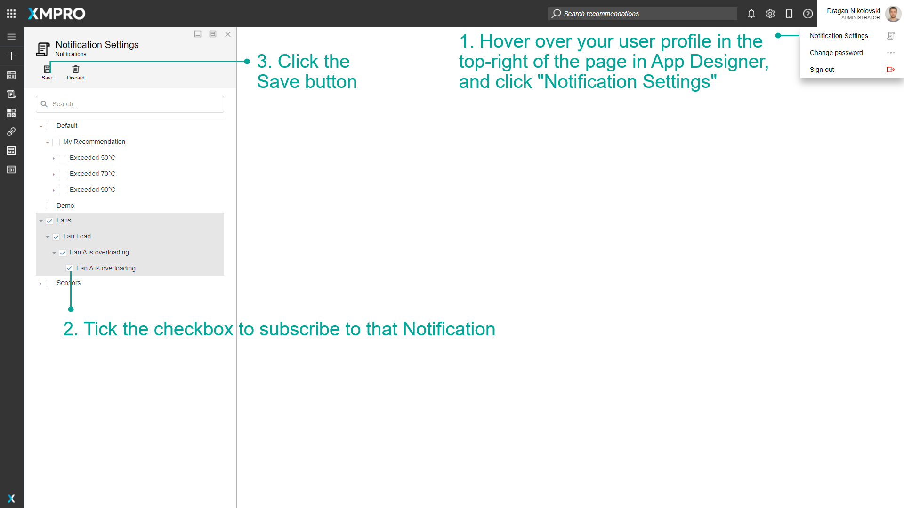

Subscribe to Notifications
Subscribing to Notifications allows you to receive email or SMS messages for Recommendation Alerts that are relevant to you or your organization. This is useful if you want to keep track of certain Recommendations.
Note
It is recommended that you read the article listed below to improve your understanding of Notifications.
Subscribe to a Notification
To subscribe to a Notification, follow the steps below:
- Hover over your user profile in the top-right of the page in App Designer, and click "Notification Settings".
- Tick the checkbox to subscribe to that Notification.
- Click the Save button.

Last modified: May 28, 2025